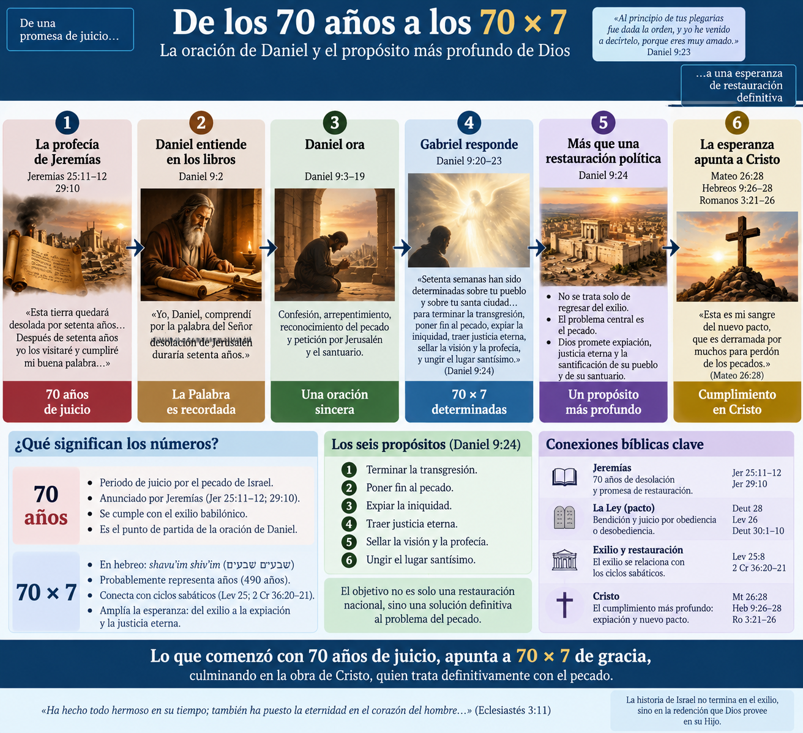
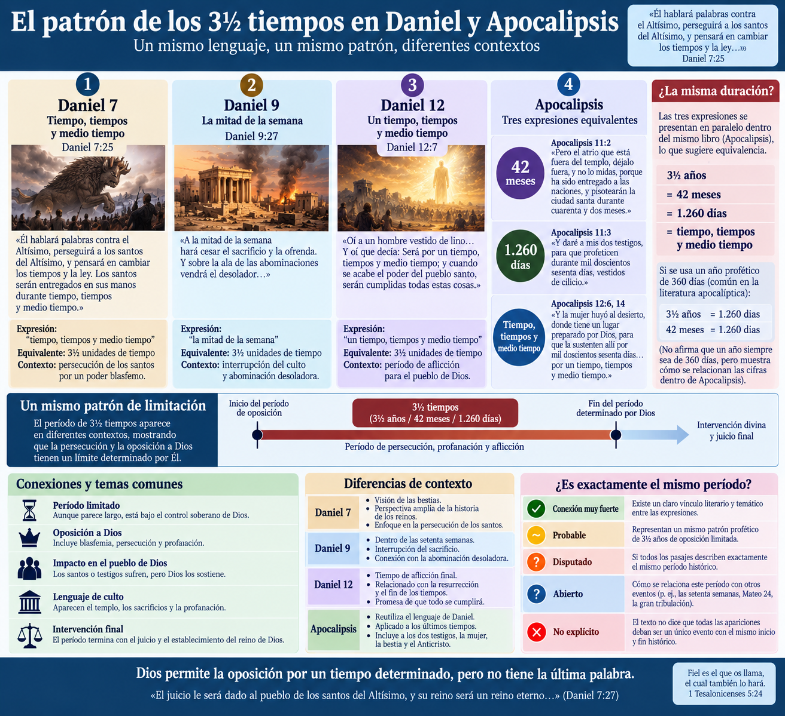
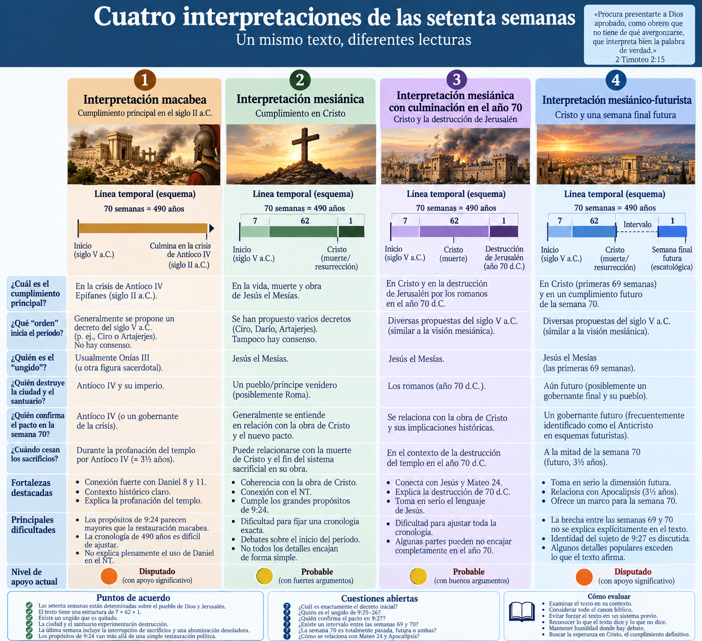
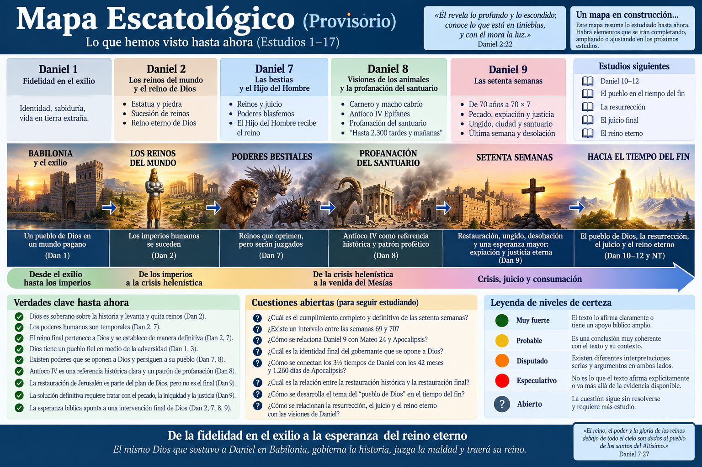

Este estudio requiere especial cuidado porque es uno de los textos escatológicos donde más fácilmente se empieza con un sistema y luego se intenta acomodar el pasaje. Vamos a hacer lo contrario: Daniel 9 primero; cronologías y sistemas después.
Daniel 9:1–27
Daniel 9 contiene una de las profecías más discutidas de toda la Biblia: las setenta semanas.
Durante siglos se han propuesto diferentes cronologías para identificar:
Pero antes de construir una cronología debemos observar algo fundamental:
Daniel 9 no comienza con una calculadora. Comienza con la Biblia abierta y con Daniel orando.
La profecía de las setenta semanas aparece como respuesta divina a la preocupación de Daniel por Jerusalén, el pecado de Israel, el exilio y la promesa de Jeremías acerca de los setenta años.
Por eso nuestra pregunta principal será:
¿Qué está respondiendo Gabriel a la oración de Daniel?
Daniel 9 comienza situándonos durante el primer año de Darío.
Daniel explica que estaba estudiando “los libros” y comprendió por la palabra dada a Jeremías que la desolación de Jerusalén duraría setenta años.
📖 Daniel 9:2.
El texto hebreo menciona:
שִׁבְעִים שָׁנָה — shiv'im shanah
“setenta años”.
Daniel está reflexionando sobre las profecías de Jeremías.
Especialmente:
📖 Jeremías 25:11–12 📖 Jeremías 29:10
Jeremías había anunciado que Babilonia dominaría durante setenta años y que posteriormente Dios visitaría a su pueblo y permitiría su restauración.
Por tanto, el punto de partida de Daniel 9 es claro:
Jeremías → 70 años → Jerusalén desolada → restauración esperada.
🟢 Muy fuerte: las setenta semanas de Daniel 9 deben interpretarse inicialmente como respuesta a los setenta años de Jeremías.
Aquí ocurre algo teológicamente importante.
Daniel comprende que los setenta años están llegando a su cumplimiento.
¿Y qué hace?
No celebra automáticamente el final del exilio.
Daniel ora.
📖 Daniel 9:3–19.
Su oración contiene:
Daniel dice esencialmente:
Hemos pecado. Dios ha sido justo. Señor, perdona y restaura tu ciudad.
Esto nos ayuda a comprender la respuesta posterior de Gabriel.
La oración de Daniel utiliza lenguaje profundamente relacionado con el pacto.
Daniel reconoce que las maldiciones anunciadas en la Ley de Moisés habían caído sobre Israel.
📖 Daniel 9:11–13.
Esto apunta especialmente a:
📖 Deuteronomio 28 📖 Levítico 26
Israel quebranta el pacto → viene juicio → exilio.
Pero había también esperanza:
📖 Deuteronomio 30:1–10.
Después del juicio y el exilio, Dios podía restaurar a su pueblo.
Por tanto, Daniel no está preguntando simplemente:
“¿Cuándo regresaremos geográficamente?”
El problema más profundo es:
¿Qué ocurrirá con el pecado que produjo el exilio?
Ese punto será decisivo en Daniel 9:24.
🟢 Muy fuerte: el verdadero problema de Daniel 9 no es solamente Babilonia; es el pecado de Israel y sus consecuencias pactales.
Mientras Daniel ora, aparece Gabriel.
📖 Daniel 9:20–23.
Gabriel había aparecido anteriormente en Daniel 8.
Ahora viene para darle entendimiento.
Entonces declara:
“Setenta semanas han sido determinadas sobre tu pueblo y sobre tu santa ciudad…”
📖 Daniel 9:24.
La expresión hebrea es:
שָׁבֻעִים שִׁבְעִים — shavu'im shiv'im
Literalmente:
“setenta sietes”.
La palabra שָׁבוּעַ — shavua significa una unidad de siete.
El contexto debe determinar qué clase de “sietes” están involucrados.
Una lectura de 70 × 7 días produciría solamente 490 días.
Eso difícilmente puede abarcar los acontecimientos descritos: reconstrucción de Jerusalén, aparición de personajes ungidos, conflictos y destrucción.
Por eso la interpretación histórica dominante entiende:
70 × 7 años = 490 años.
Pero hay además un trasfondo veterotestamentario importante.
📖 Levítico 25:8 habla de:
siete semanas de años.
Y Levítico 26 relaciona el exilio con el descanso sabático de la tierra.
Más adelante:
📖 2 Crónicas 36:20–21
interpreta el exilio babilónico en relación con esos descansos sabáticos.
Así aparece una red conceptual:
sábado → ciclos de siete → años → exilio → restauración.
🟢 Muy fuerte: Daniel 9 presenta setenta unidades de siete.
🟡 Probable: esas unidades representan años, produciendo simbólica o cronológicamente un período de 490 años.
❓ Lo que todavía debemos determinar es hasta qué punto los 490 años funcionan como una cronología matemática exacta o como una estructura profético-simbólica basada en ciclos sabáticos.
No debemos decidirlo antes de analizar el resto del pasaje.
Daniel 9:24 proporciona seis objetivos.
Las setenta semanas están determinadas para:
Esto cambia completamente el enfoque.
La profecía no trata principalmente de:
❌ calcular una fecha del fin del mundo.
Su preocupación central es:
pecado → expiación → justicia → cumplimiento → santidad.

Una expresión especialmente importante es:
וּלְכַפֵּר עָוֹן — ulekhapper avon
El verbo כפר — kippēr pertenece al lenguaje de expiación.
Es la misma familia lingüística relacionada con:
Yom Kippur — Día de la Expiación.
Gabriel está diciendo que el programa de Dios culminará de alguna manera en una solución para la iniquidad.
Esto es muchísimo mayor que simplemente regresar de Babilonia.
Israel podía regresar físicamente a Jerusalén y continuar teniendo el mismo problema espiritual.
Por eso las setenta semanas parecen ampliar la expectativa de Daniel:
Los setenta años solucionarán el exilio babilónico, pero Dios tiene un programa mayor para solucionar el problema que produjo el exilio.
🟢 Muy fuerte: Daniel 9:24 presenta una restauración más profunda que la mera reconstrucción política de Jerusalén.
Desde una lectura cristiana, varias expresiones de Daniel 9:24 encuentran una correspondencia extraordinaria con la obra de Jesús.
El Nuevo Testamento presenta la muerte de Cristo como relacionada con:
📖 Mateo 26:28 — perdón de pecados. 📖 Romanos 3:21–26 — justicia y expiación. 📖 Hebreos 9:26 — eliminación del pecado mediante su sacrificio. 📖 Hebreos 10:10–14 — sacrificio definitivo.
Por tanto:
🟢 Muy fuerte teológicamente: los objetivos de Daniel 9:24 armonizan profundamente con la obra redentora de Cristo.
Sin embargo, debemos distinguir esto de otra afirmación:
“Daniel 9:24 está prediciendo exclusivamente y de manera directa la crucifixión”.
Eso requiere analizar los versículos 25–27.
Todavía no debemos asumirlo.
Daniel 9:25 introduce el comienzo del período.
El texto habla de la salida de una:
דָּבָר — davar
que puede significar:
palabra, asunto, decreto, mandato.
Desde esa “palabra” para restaurar y reconstruir Jerusalén comienza la secuencia.
Aquí aparece nuestra primera gran dificultad cronológica.
¿Qué “palabra” es?
Se han propuesto principalmente:
📖 Esdras 1 📖 Esdras 6 📖 Esdras 7 📖 Nehemías 2
🟠 Disputado: el texto de Daniel 9 no identifica explícitamente cuál decreto histórico debe utilizarse como punto inicial.
Por eso debemos tener cuidado con cronologías que presentan una fecha inicial como si fuera indiscutible.
Las setenta semanas no aparecen como un bloque indiferenciado.
Gabriel las divide:
7 semanas + 62 semanas + 1 semana
Es decir:
7 + 62 + 1 = 70.
Si representan años:
49 + 434 + 7 = 490 años.
La estructura básica sería:
Palabra para restaurar Jerusalén
→ 7 semanas
→ 62 semanas
→ un ungido es quitado
→ crisis sobre ciudad/santuario
→ semana final
→ mitad de la semana
→ cesan sacrificios
→ abominación/desolación
→ juicio del desolador.
Esta estructura textual es más segura que cualquier reconstrucción cronológica específica.
🟢 Muy fuerte: el texto distingue claramente períodos dentro de las setenta semanas.
Daniel 9:25 utiliza:
מָשִׁיחַ נָגִיד — mashiach nagid
Literalmente:
“un ungido, un príncipe/gobernante”.
Aquí debemos evitar un error frecuente.
La palabra mashiach significa “ungido”.
En el Antiguo Testamento puede utilizarse para:
📖 Isaías 45:1 llama a Ciro “ungido”.
Por tanto:
🔴 Es incorrecto afirmar que la palabra mashiach por sí sola demuestra automáticamente que Daniel está hablando de Jesús.
Pero tampoco significa que Jesús quede excluido.
La pregunta debe ser:
¿Quién es este ungido según el contexto, la cronología y el desarrollo bíblico posterior?
Daniel 9:26 contiene una declaración sorprendente.
Después de las sesenta y dos semanas:
יִכָּרֵת מָשִׁיחַ — yikkaret mashiach
“será cortado/quitado un ungido”.
El verbo כרת — karat puede expresar ser cortado, eliminado o muerto.
Luego aparece la difícil expresión:
וְאֵין לוֹ — ve'en lo
aproximadamente:
“y no tendrá nada” / “y no habrá para él”.
La figura ungida no aparece conquistando inmediatamente.
Es eliminada.
Desde una lectura cristiana resulta imposible no observar el posible paralelo con la muerte de Jesús.
📖 Isaías 53:8 también utiliza lenguaje de ser “cortado” de la tierra de los vivientes.
Pero debemos mantener separados dos niveles:
🟢 El texto explícitamente anuncia que un ungido será quitado.
🟡 La identificación de este ungido con Jesús posee una fuerte coherencia dentro de una lectura cristiana canónica.
🟠 La identificación histórica exacta sigue siendo discutida entre intérpretes.
Después de mencionar al ungido quitado, Daniel 9:26 anuncia:
el pueblo de un príncipe venidero destruirá la ciudad y el santuario.
Esto es importantísimo.
Los dos elementos por los cuales Daniel estaba orando:
Jerusalén + santuario
volverán a experimentar destrucción.
La restauración posterior a Babilonia, por tanto, no será todavía la solución final.
La historia continuará.
Habrá nuevamente:
🟢 Muy fuerte: Daniel 9 predice una crisis posterior a la reconstrucción de Jerusalén.
Aquí debemos recordar inmediatamente el Estudio 16.
Daniel 8 describió claramente a Antíoco IV Epífanes:
Daniel 9:27 utiliza nuevamente lenguaje de:
sacrificio + interrupción + abominación + desolación.
La semejanza es demasiado importante para ignorarla.
Esto explica por qué una interpretación histórico-crítica ampliamente difundida entiende Daniel 9:24–27 dentro de la crisis de Antíoco IV en el siglo II a.C. ([The Torah][1])
🟢 Muy fuerte: existe una conexión temática estrecha entre Daniel 8 y Daniel 9.
🟡 Probable: la persecución de Antíoco constituye al menos un trasfondo histórico importante para comprender el lenguaje de Daniel 9.
Pero aparece una dificultad.
Daniel 9:26 también habla de la destrucción de la ciudad y el santuario, algo que puede recordar poderosamente la destrucción romana de Jerusalén en el año 70 d.C.
Por eso debemos evitar una identificación demasiado rápida.
Daniel 9:27 contiene una expresión que volverá a aparecer en Daniel.
Está relacionada con:
שִׁקּוּצִים — shiqqutsim
“abominaciones”.
Y:
מְשֹׁמֵם — meshomem
algo que causa desolación.
Encontraremos lenguaje relacionado en:
📖 Daniel 11:31 📖 Daniel 12:11
Y después ocurre algo extremadamente importante.
Jesús utiliza este lenguaje.
📖 Mateo 24:15 📖 Marcos 13:14
Jesús habla de:
“la abominación desoladora de que habló el profeta Daniel”.
Esto demuestra que, para Jesús y los evangelistas, el lenguaje de Daniel podía funcionar más allá de un único acontecimiento pasado.
Aquí aparece un principio que ya vimos en Daniel 8.
Antíoco IV puede representar una manifestación histórica concreta del gobernante blasfemo.
Pero los acontecimientos asociados con él pueden convertirse también en un patrón profético reutilizado posteriormente.
Podríamos tener:
Antíoco IV
→ profanación del templo
→ patrón de abominación/desolación
→ reutilización por Jesús
→ crisis posterior sobre Jerusalén
→ posible dimensión escatológica.
Esto no significa automáticamente que cada detalle tenga dos o tres cumplimientos.
Pero sí significa que el Nuevo Testamento reutiliza el lenguaje de Daniel.
🟢 Muy fuerte: Jesús aplica lenguaje daniélico de abominación/desolación a una crisis que, desde su perspectiva histórica, todavía tenía relevancia futura.
🟡 Probable: Antíoco funciona como un tipo histórico o patrón de profanación que puede reaparecer.
❓ Queda abierta la cuestión de si Mateo 24 conduce además hacia una manifestación escatológica final. Eso deberá estudiarse cuando lleguemos al discurso del Monte de los Olivos.
Daniel 9:27 dice que alguien:
hará prevalecer/confirmará un pacto con muchos durante una semana.
Hebreo:
וְהִגְבִּיר בְּרִית לָרַבִּים
Aquí aparece uno de los problemas interpretativos más importantes del capítulo:
¿Quién es el sujeto?
Se han propuesto principalmente:
El sujeto sería el príncipe relacionado con la destrucción.
En lecturas futuristas suele identificarse con un gobernante escatológico, frecuentemente llamado Anticristo.
El sujeto sería el ungido mencionado anteriormente.
La semana final describiría entonces la obra mesiánica y el establecimiento/confirmación del pacto.
Dentro de la lectura macabea, la sección final describe los acontecimientos relacionados con Antíoco IV y la profanación del templo.
🟠 Disputado: la gramática permite debate sobre el referente del sujeto.
El texto no dice:
“el Anticristo hará un tratado de paz de siete años con Israel”.
Esa formulación contiene varias inferencias adicionales.
Por tanto:
🔴 Especulativo si se presenta como afirmación explícita de Daniel 9: que el versículo enseñe directamente un tratado político moderno de siete años firmado por “el Anticristo” con el Estado de Israel.
Eso puede formar parte de un sistema interpretativo futurista, pero no son las palabras explícitas del texto.
Daniel 9:27 continúa diciendo que a mitad de la semana cesarán:
Si la semana representa siete años:
½ semana = 3½ años.
Y aquí ocurre algo fascinante.
El período de tres años y medio aparece repetidamente en Daniel y posteriormente en Apocalipsis.
Daniel:
📖 Daniel 7:25 📖 Daniel 9:27 📖 Daniel 12:7
Apocalipsis:
📖 Apocalipsis 11:2 — 42 meses 📖 Apocalipsis 11:3 — 1.260 días 📖 Apocalipsis 12:6 — 1.260 días 📖 Apocalipsis 12:14 — tiempo, tiempos y medio tiempo 📖 Apocalipsis 13:5 — 42 meses
Por tanto:
🟢 Muy fuerte: el patrón de 3½ se convierte en un período simbólico/escatológico importante dentro de la literatura apocalíptica bíblica.
❓ Todavía no debemos decidir si cada aparición describe exactamente el mismo período histórico.

Esta es una de las cuestiones más conocidas.
En el dispensacionalismo futurista clásico se propone:
69 semanas
→ muerte de Cristo
→ pausa / era de la Iglesia
→ semana 70 todavía futura.
La semana final correspondería entonces a un período escatológico de siete años.
Frecuentemente se estructura:
3½ + 3½ años.
Durante ese período aparecería el Anticristo, quien quebrantaría el pacto a mitad de la semana.
Quienes sostienen esta posición señalan que:
Sin embargo:
Daniel 9 no menciona explícitamente una pausa de miles de años.
Tampoco utiliza expresiones como:
“el reloj profético se detendrá”.
Por tanto:
🟠 Disputado: una separación temporal entre la semana 69 y 70.
🔴 Especulativo si se presenta como explícito: que Daniel enseñe directamente una “era de la Iglesia” insertada entre las semanas 69 y 70.
Puede ser una construcción teológica posible, pero debe demostrarse desde el conjunto bíblico y no introducirse automáticamente en Daniel 9.
Podemos resumir las grandes lecturas así.
Las setenta semanas culminan principalmente en la crisis del siglo II a.C.
El ungido eliminado suele identificarse con Onías III, sumo sacerdote asesinado alrededor de 171 a.C.
La profanación y suspensión de sacrificios corresponden a Antíoco IV.
🟢 Explica muy bien la continuidad con Daniel 8 y 11.
🟢 Encaja naturalmente con la profanación del templo bajo Antíoco.
🟢 Explica el período aproximado de tres años y medio de persecución.
🟠 La cronología completa de los 490 años resulta difícil de hacer coincidir exactamente.
🟠 Los enormes objetivos de Daniel 9:24 parecen superar lo ocurrido durante la restauración macabea.
🟠 Desde una lectura cristiana canónica, no explica por sí sola la posterior reutilización de Daniel por Jesús y el NT.
Aquí las semanas conducen hacia Jesús.
El “ungido” de Daniel 9:25–26 se identifica con Cristo.
Su ser “quitado” corresponde a su muerte.
La expiación de Daniel 9:24 encuentra cumplimiento decisivo en la cruz.
🟢 Existe una fuerte correspondencia temática entre Daniel 9:24 y la obra expiatoria de Cristo.
🟢 La eliminación del “ungido” encaja notablemente con un Mesías que muere.
🟢 El NT presenta a Jesús como quien establece el nuevo pacto mediante su sangre.
📖 Mateo 26:28.
🟠 Determinar matemáticamente el comienzo y final exactos de las semanas continúa siendo difícil.
🟠 Existen diferentes cronologías mesiánicas que utilizan fechas iniciales diferentes.
🟠 Daniel no identifica explícitamente al “ungido” como Jesús de Nazaret; esa identificación surge al leer Daniel dentro del canon cristiano completo.
Esta lectura identifica las primeras 69 semanas con acontecimientos que culminan en Cristo, pero separa la semana 70 y la coloca en el futuro escatológico.
El esquema habitual es:
69 semanas → Cristo → intervalo → semana 70 → Anticristo → segunda venida.
🟡 Toma seriamente la reutilización futura del lenguaje de Daniel en Mateo y Apocalipsis.
🟡 Permite relacionar la última semana con los períodos de 3½ años de Apocalipsis.
🟠 La enorme brecha entre las semanas 69 y 70 no aparece explícitamente explicada en Daniel 9.
🟠 La identificación del sujeto de 9:27 con un Anticristo futuro debe inferirse.
🔴 Detalles populares como un “tratado de paz moderno de siete años” exceden claramente lo que Daniel afirma.
Otra lectura entiende:
Esta lectura tiene una ventaja importante:
Jesús mismo relaciona Daniel con la futura desolación de Jerusalén.
📖 Mateo 24 📖 Lucas 21
🟢 Produce una conexión significativa entre Daniel, Jesús y la destrucción del segundo templo.
🟠 Sigue siendo difícil hacer coincidir cada segmento de las setenta semanas con una cronología matemática absolutamente indiscutible.

Aquí conviene mantener mucha prudencia.
Existen cronologías que parten de:
Y producen fechas diferentes para el Mesías.
Algunas utilizan años solares.
Otras años proféticos de 360 días.
Otras diferentes métodos inclusivos de conteo.
El problema es que cuando una interpretación necesita cambiar:
para obtener una fecha determinada, aumenta el nivel de incertidumbre.
Por eso:
🟢 Muy fuerte: Daniel presenta una estructura temporal deliberada.
🟡 Probable: los setenta sietes corresponden fundamentalmente a años.
🟠 Disputado: que podamos reconstruir una cronología matemática exacta e indiscutible hasta una fecha concreta de la vida de Jesús.
🔴 Especulativo: afirmar que Daniel permite calcular con certeza absoluta el día exacto de la entrada triunfal de Jesús.
La profecía puede ser genuinamente cronológica sin exigir que nosotros podamos reconstruir cada fecha con precisión moderna.
Existe además una posible dimensión teológica del número.
Daniel pregunta por:
70 años.
Gabriel responde:
70 × 7.
Esto puede estar diciendo algo mucho más profundo:
La restauración que Dios promete es mucho mayor que simplemente terminar el exilio babilónico.
El problema del exilio terminará.
Pero el problema del pecado que produjo el exilio necesita una solución mucho mayor.
Y precisamente eso aparece en 9:24:
transgresión → pecado → iniquidad → expiación → justicia eterna.
🟡 Probable: el número 70 × 7 posee también una dimensión teológica relacionada con plenitud, ciclos sabáticos y restauración.
Esto no necesariamente elimina su dimensión cronológica.
Puede tener ambas.
Cuando llegamos al Nuevo Testamento ocurre algo extraordinario.
Daniel esperaba:
fin del pecado + expiación + justicia eterna.
Jesús anuncia:
“Esta es mi sangre del nuevo pacto, que es derramada por muchos para perdón de los pecados.”
📖 Mateo 26:28.
Observe incluso la combinación:
Daniel 9:
pacto + muchos + expiación
Evangelios:
pacto + muchos + perdón mediante la sangre de Cristo.
Esto no demuestra automáticamente que cada palabra de Daniel 9:27 describa directamente a Jesús.
Pero la conexión canónica es teológicamente muy significativa.
🟢 Muy fuerte: la obra de Cristo cumple el gran problema teológico planteado en Daniel 9:24: pecado, iniquidad, expiación y justicia.
Ahora podemos unir nuestros estudios anteriores.
Los reinos humanos pasan.
➡️ Finalmente Dios establece su reino.
Las bestias dominan temporalmente.
➡️ Finalmente el Hijo del Hombre recibe el reino.
Un rey arrogante profana el santuario.
➡️ Finalmente es destruido sin intervención humana.
Jerusalén será restaurada, pero sufrirá nuevas crisis.
➡️ Finalmente Dios trata decisivamente con pecado, iniquidad y justicia.
El mensaje acumulativo comienza a hacerse visible:
La esperanza de Daniel no consiste simplemente en reemplazar Babilonia por Jerusalén. Dios está conduciendo la historia hacia una solución mucho más profunda: derrotar el pecado, juzgar los poderes arrogantes y establecer su reino.
Debemos distinguir diferentes niveles.
Las setenta semanas responden a los setenta años de Jeremías.
La profecía trata directamente con:
Israel + Jerusalén + pecado + templo + restauración + juicio.
Las semanas probablemente representan ciclos de años.
Daniel 9 está conectado literariamente con las crisis descritas en Daniel 8–12.
La profecía supera una simple restauración política porque promete expiación y justicia eterna.
El período tiene una dimensión tanto cronológica como teológica/sabática.
Antíoco IV constituye un trasfondo fundamental para el lenguaje de profanación y desolación.
La figura del “ungido quitado”, leída dentro del canon cristiano, encuentra una correspondencia particularmente fuerte en Jesús.
La obra de Cristo proporciona el cumplimiento teológico más profundo de los objetivos de Daniel 9:24.
La fecha exacta desde la cual deben contarse las setenta semanas.
La identidad histórica inmediata de cada “ungido”.
La identidad del sujeto de Daniel 9:27.
Si la destrucción de 9:26 apunta principalmente hacia Antíoco, Roma o una combinación/patrón progresivo.
Si existe un intervalo entre las semanas 69 y 70.
Si la semana 70 pertenece enteramente al pasado o conserva una dimensión escatológica futura.
Construir a partir de Daniel 9, sin apoyo adicional:
Daniel 9 por sí mismo no establece esas conclusiones.
Daniel estaba esperando el final de setenta años.
Gabriel le habló de setenta sietes.
Daniel estaba preocupado por la destrucción de Jerusalén.
Gabriel mostró que Jerusalén todavía atravesaría conflictos.
Daniel estaba preocupado por el templo.
Gabriel anunció que el santuario volvería a sufrir desolación.
Pero Daniel confesaba algo todavía más profundo:
el pecado de su pueblo.
Y allí aparece el corazón de la profecía.
Las setenta semanas conducirán hacia:
el tratamiento definitivo de la transgresión, el pecado y la iniquidad, y hacia la justicia eterna.
Desde la perspectiva cristiana, esto dirige inevitablemente nuestra mirada hacia Cristo.
No porque debamos introducir a Jesús artificialmente en cada número, sino porque el Nuevo Testamento presenta precisamente su muerte como la obra mediante la cual Dios enfrenta el problema que Daniel estaba confesando:
el pecado.
Por eso, la afirmación más segura no es:
“Daniel 9 nos entrega un calendario secreto para calcular el fin”.
Sino:
Daniel 9 amplía la esperanza de restauración: el verdadero problema no termina cuando Israel sale de Babilonia; la restauración definitiva requiere que Dios trate con el pecado mismo.
Y allí la esperanza de Daniel comienza a converger profundamente con el evangelio.
🟢 Los reinos humanos son temporales — Daniel 2.
🟢 El reino final pertenece a Dios — Daniel 2.
🟢 El Hijo del Hombre recibe dominio universal — Daniel 7.
🟢 Los poderes blasfemos pueden perseguir al pueblo de Dios durante períodos limitados — Daniel 7–8.
🟢 Antíoco IV constituye una referencia histórica clara de profanación y persecución — Daniel 8.
🟢 El lenguaje de Antíoco puede convertirse en patrón para crisis posteriores — Daniel 8–9.
🟢 La restauración bíblica requiere algo más profundo que regresar del exilio: requiere tratar con el pecado — Daniel 9.
🟢 Daniel 9 espera expiación y justicia eterna.
🟡 Las setenta semanas probablemente representan 490 años dentro de una estructura sabático-profética.
🟡 Desde una lectura cristiana canónica, los objetivos de Daniel 9:24 convergen poderosamente en la obra de Cristo.
🟠 La cronología exacta de las setenta semanas permanece discutida.
🟠 La identidad de todos los personajes de Daniel 9:25–27 permanece parcialmente discutida.
🟠 La existencia de una brecha entre las semanas 69 y 70 permanece abierta.
❓ La relación exacta entre Daniel 9, Mateo 24 y la tribulación final todavía no debe cerrarse.
❓ La relación entre los 3½ años de Daniel y los 42 meses / 1.260 días de Apocalipsis deberá estudiarse posteriormente.
❓ La identidad y función del gobernante final de Daniel deberá esperar especialmente a Daniel 11–12 y posteriormente al NT.
